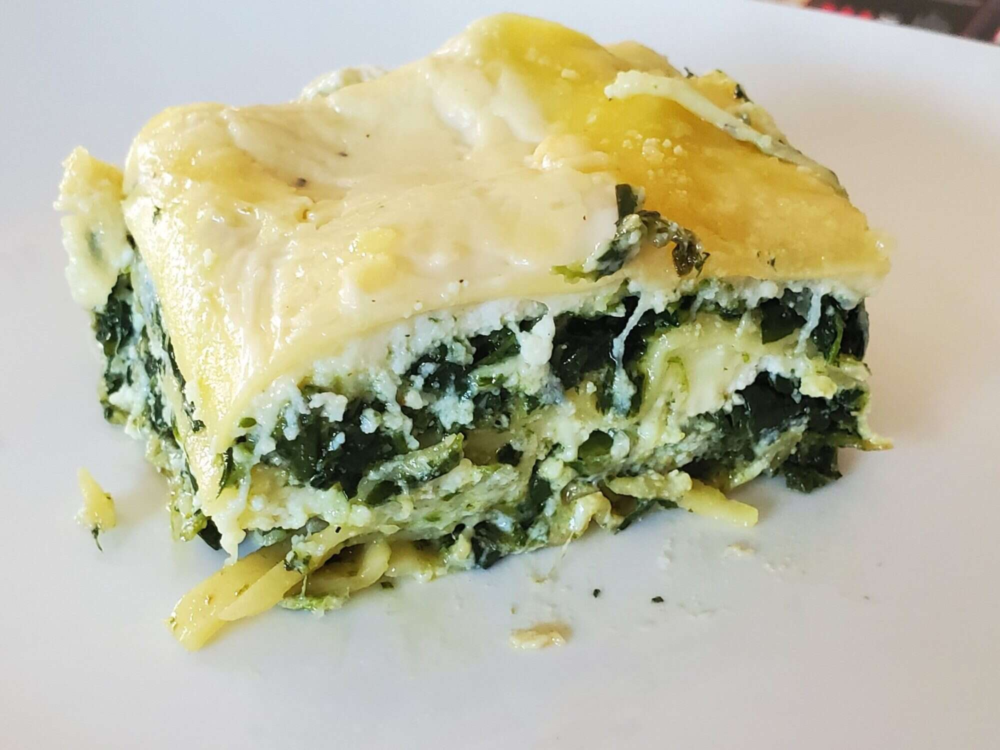

Lasagna recipe

Description
A fast and delicious recipe that uses fresh ingredients.
Try making tonight. The pesto tastes great!
Ingredients
- 1 (16 ounce) package lasagna noodles
- 2 tablespoons olive oil
- 1 small onion, chopped
- 1 (16 ounce) package frozen chopped spinach, thawed
- 7 ounces basil pesto
- 30 ounces ricotta cheese
- 1 egg
- 1/2 teaspoon salt
- 1/4 teaspoon ground black pepper
- 1/4 teaspoon ground nutmeg
- 2 cups mozzarella cheese, shredded
- 9 ounces Alfredo-style pasta sauce
- 1/4 cup grated Parmesan cheese
Steps
- Preheat the oven to 350 degrees F (175 degrees C)./li>
- Bring a large pot of lightly salted water to a boil. Add lasagna and cook for 8 to 10 minutes or until al dente; drain.
- In large skillet over medium heat, sauté onion in olive oil until tender. Stir in spinach; remove from heat and stir in pesto.
- In a large bowl mix ricotta cheese, egg, salt, pepper, and nutmeg.
- In a 3-quart greased baking dish, layer noodles then spinach mixture, followed by ricotta mixture. Sprinkle with mozzarella cheese. Repeat the layers ending with noodles on top. Spread Alfredo sauce on top of noodles and sprinkle with Parmesan cheese
- Cover with foil and bake in the preheated oven for 45 to 55 minutes.
Return to homepage